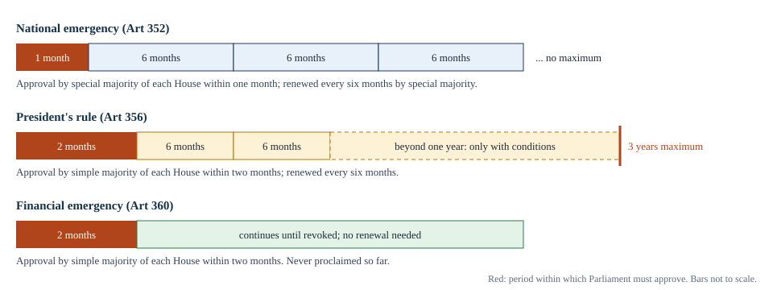

Chapter 10: Emergency Provisions¶
National emergency, President's rule in the States and financial emergency
Learning outcomes
When you have finished this chapter you should be able to:
- explain why the Constitution contains emergency provisions and where they come from;
- state the grounds, procedure, approval, duration and revocation of a national emergency under Article 352;
- describe the effects of a national emergency on Centre-State relations, Parliament and Fundamental Rights;
- state the grounds, approval and duration of President's rule under Article 356, and explain its effects;
- summarise the guidelines laid down in S. R. Bommai (1994) and the cases in which Article 356 is and is not properly used;
- explain the financial emergency under Article 360;
- list the safeguards added by the 44th Amendment (1978) after the emergency of 1975–77.
10.1 Why emergency provisions?¶
Every constitution must face the possibility that ordinary government will not be enough: an invasion, an armed rebellion, the collapse of a State government, or a financial crisis. The framers of the Indian Constitution had just lived through partition, communal violence and the integration of the princely states. They gave the Union extraordinary powers to deal with such situations, in Part XVIII (Articles 352 to 360).
The Constitution provides for three kinds of emergency:
- a national emergency (Article 352), on the ground of war, external aggression or armed rebellion;
- failure of constitutional machinery in a State (Article 356), popularly called President's rule or State emergency;
- a financial emergency (Article 360).
During an emergency, the federal system can become, in effect, unitary: the Union can direct the States, legislate on State subjects and, in the case of President's rule, take over the government of a State. The emergency provisions draw on the Government of India Act, 1935 (for the structure of central powers) and on the Weimar Constitution of Germany (for the suspension of Fundamental Rights).
The provisions were much debated in the Constituent Assembly. Some members feared they would be misused to destroy State autonomy and civil liberties. The experience of 1975–77 showed that the fears were not groundless, and the 44th Amendment (1978) added important safeguards, which this chapter notes at each step.

10.2 National emergency (Article 352)¶
Grounds¶
The President may proclaim a national emergency if satisfied that a grave emergency exists whereby the security of India, or of any part of it, is threatened by war, external aggression or armed rebellion. The proclamation may be issued before the actual occurrence of war, aggression or rebellion, if the President is satisfied that there is imminent danger of it. Since the 42nd Amendment (1976), it may apply to the whole of India or to a part only.
When the ground is war or external aggression, the emergency is sometimes called an external emergency; when it is armed rebellion, an internal emergency. Originally the third ground was "internal disturbance"; the 44th Amendment replaced it with the narrower words "armed rebellion", so that a mere disturbance of law and order cannot justify a national emergency.
Procedure and approval¶
- The President can proclaim an emergency only on the written communication of a decision of the Union Cabinet (the Prime Minister and Cabinet Ministers), not on the advice of the Prime Minister alone. This was added by the 44th Amendment.
- The proclamation must be laid before both Houses of Parliament and approved by each House within one month (two months before the 44th Amendment). Otherwise it ceases to operate.
- Approval requires a special majority: a majority of the total membership of each House and two-thirds of the members present and voting (a simple majority before the 44th Amendment).
- If the Lok Sabha has been dissolved, or is dissolved during the month, and the Rajya Sabha approves the proclamation, it continues until thirty days after the first sitting of the new Lok Sabha, which must approve it within that time.
Duration and revocation¶
Once approved, the emergency continues for six months, and can be extended indefinitely by further approvals of both Houses, each by special majority, every six months. (Before 1978, an approved emergency continued until revoked, without any need for renewal.)
The President may revoke the proclamation at any time by a further proclamation, which needs no parliamentary approval. The President must revoke it if the Lok Sabha passes a resolution disapproving its continuation, by a simple majority. If one-tenth of the total members of the Lok Sabha give written notice to the Speaker (or to the President, if the House is not in session) of their intention to move such a resolution, a special sitting must be held within fourteen days to consider it. These provisions too were added in 1978, to ensure that the Lok Sabha could end an emergency even if the government did not want to.
Key idea
A national emergency needs: a written decision of the Cabinet; approval by a special majority of each House within one month; renewal every six months, again by special majority. It can be ended by the President at any time, and must be ended if the Lok Sabha disapproves by a simple majority.
Effects¶
On Centre-State relations. The federal division of powers is not suspended, but the Union's powers expand:
- executive: the Union may give directions to any State on any matter (Article 353), not only on the matters covered by Articles 256 and 257;
- legislative: Parliament may make laws on any subject in the State List (Article 250). Such laws cease to have effect six months after the emergency ends. The State legislatures are not suspended, but their laws give way to Union laws;
- financial: the President may modify the constitutional distribution of revenues between the Union and the States (Article 354), subject to approval by Parliament, until the end of the financial year in which the emergency ends.
On the life of the Lok Sabha and Assemblies. During a national emergency, Parliament may by law extend the term of the Lok Sabha by one year at a time, without limit, but not beyond six months after the emergency has ceased (Article 83(2)). The terms of State Legislative Assemblies may be extended in the same way (Article 172(1)). The term of the fifth Lok Sabha was extended in this way during 1976.
On Fundamental Rights. As explained in Chapter 3:
- under Article 358, the six freedoms of Article 19 are suspended automatically when an emergency is proclaimed on the ground of war or external aggression (not armed rebellion). The State may then make laws or take executive action restricting those freedoms, and they cannot be challenged during the emergency;
- under Article 359, the President may by order suspend the right to move any court for the enforcement of the Fundamental Rights named in the order, except Articles 20 and 21. The order must be laid before Parliament.
Since the 44th Amendment, only laws that contain a recital that they are made in relation to the emergency are protected from challenge under Articles 358 and 359; other laws and executive actions remain open to challenge.
Article 358 and Article 359 are different
Article 358 works automatically and only for Article 19, and only in an emergency on the ground of war or external aggression. Article 359 needs a Presidential order, can cover any Fundamental Right named in it except Articles 20 and 21, and applies whatever the ground of the emergency. Article 358 suspends the right itself; Article 359 suspends only its enforcement in court.
Use so far¶
A national emergency has been proclaimed three times.
| Proclamation | Ground | Circumstances |
|---|---|---|
| October 1962 | External aggression | Chinese aggression on the northern frontier; revoked in January 1968 |
| December 1971 | External aggression | War with Pakistan; revoked in March 1977 |
| June 1975 | Internal disturbance | Proclaimed while the 1971 emergency was still in force; revoked in March 1977 |
Table 10.1. Proclamations of national emergency.
The emergency of 1975–77 is the one usually meant by "the Emergency". It was proclaimed on the ground of internal disturbance on 25 June 1975. During it, many political leaders and others were detained under preventive detention laws, the press was censored, elections were postponed by extending the term of the Lok Sabha, and Parliament passed far-reaching amendments, including the 38th, 39th and 42nd. General elections were held in March 1977, after which the emergency was revoked. The new government set up the Shah Commission of Inquiry, under a former Chief Justice of India, J. C. Shah, to inquire into excesses committed during the period, and Parliament enacted the 44th Amendment.
Judicial review¶
The 38th Amendment (1975) declared the President's satisfaction in proclaiming an emergency final and beyond the review of any court. The 44th Amendment (1978) deleted that provision. In Minerva Mills (1980), the Supreme Court held that a proclamation of emergency can be challenged if it is shown to be mala fide, or based on wholly extraneous or irrelevant grounds, or absurd or perverse.
10.3 President's rule (Article 356)¶
Grounds¶
Under Article 356, if the President, on receipt of a report from the Governor of a State or otherwise, is satisfied that a situation has arisen in which the government of the State cannot be carried on in accordance with the provisions of the Constitution, the President may proclaim President's rule in that State. Under Article 365, if a State fails to comply with directions given by the Union, the President may treat this as such a situation.
Approval, duration and revocation¶
- The proclamation must be approved by both Houses within two months, by a simple majority.
- Once approved, it continues for six months and may be extended by further approvals every six months, to a maximum of three years.
- Since the 44th Amendment, it can be continued beyond one year only if (a) a national emergency is in operation in the whole of India or in the whole or part of the State, and (b) the Election Commission certifies that general elections to the State Assembly cannot be held because of difficulties. (Exceptions to these limits were made by specific amendments for Punjab in the late 1980s and early 1990s.)
- The President may revoke the proclamation at any time; no parliamentary approval is needed for revocation.
Effects¶
When President's rule is proclaimed:
- the President takes over the functions of the State government and the powers of the Governor, and in practice the State is administered by the Governor on behalf of the President, assisted by advisers;
- the President declares that the powers of the State legislature shall be exercised by Parliament, which may delegate them to the President (laws made in this way are often called President's Acts);
- the Legislative Assembly is either dissolved or kept in suspended animation;
- Parliament (or, when the Lok Sabha is not in session, the President) may authorise expenditure from the Consolidated Fund of the State;
- the High Court continues to function normally; President's rule does not affect the judiciary;
- laws made during President's rule continue in force after it ends, until the State legislature alters or repeals them.
Worked example 10.1: Counting the months
Situation. President's rule is proclaimed in a State on 1 January. Parliament approves it on 20 February. No national emergency is in force. For how long, at most, can President's rule continue?
Answer. The proclamation was approved within two months, so it survives. Once approved, it lasts six months, counted from the date of the proclamation: to 30 June. It can be extended for a further six months by both Houses, to 31 December, completing one year. Because no national emergency is in force, the 44th Amendment's conditions for going beyond one year cannot be met (both a national emergency and a certificate from the Election Commission are needed). So, unless a national emergency is proclaimed, President's rule must end after one year, by 31 December. If both conditions were met, it could be extended by six months at a time up to a maximum of three years.
Use and misuse¶
President's rule has been imposed well over a hundred times since 1950, beginning with Punjab in 1951. Some impositions were clearly justified: when no party could form a stable government after an election, or when law and order had broken down completely. Others were widely criticised as being motivated by party considerations: for example, the dismissal of an elected State government that still had a majority in its Assembly, or the dissolution of several State Assemblies together after a change of government at the Centre, as happened in 1977 and again in 1980. Dr Ambedkar had told the Constituent Assembly that he hoped the article would never be called into operation and would remain a dead letter.
The Sarkaria Commission (1988) studied the use of Article 356 and recommended that it be used sparingly, as a last resort, after a warning to the State and after exploring the possibility of an alternative government.
| Proper use (examples) | Improper use (examples) |
|---|---|
| A hung Assembly in which no party or coalition can form a government | Dismissing a ministry that still has a majority, without a floor test |
| A ministry has lost its majority and no alternative government is possible | Dismissing a government on charges of maladministration or corruption alone |
| A complete breakdown of law and order, or a physical breakdown of administration | Using it to settle internal problems of the ruling party |
| A State government deliberately acting against the Constitution, or refusing to comply with constitutional directions | Imposing it for partisan political reasons, or without giving the State a chance to correct itself |
Table 10.2. Proper and improper uses of Article 356 (as summarised from the Sarkaria Commission and S. R. Bommai).
The Bommai judgment¶
In S. R. Bommai v. Union of India (1994), a nine-judge bench of the Supreme Court laid down the main principles that now govern Article 356.
- A proclamation under Article 356 is subject to judicial review. The court can examine whether there was relevant material for the President's satisfaction, and whether it was mala fide or based on irrelevant grounds. The burden lies on the Union to show the relevant material.
- The question whether a ministry has lost majority support must be decided on the floor of the House, not by the Governor's subjective assessment.
- The State Assembly should not be dissolved until both Houses of Parliament have approved the proclamation. Until then, it may only be kept in suspended animation.
- If the court strikes down the proclamation, it can restore the dismissed government and revive the Assembly.
- Secularism and federalism are part of the basic structure. A State government that pursues anti-secular policies may be dismissed under Article 356.
Following Bommai, the use of Article 356 declined considerably. The courts have applied it since; for example, in Rameshwar Prasad v. Union of India (2006), the Supreme Court held the dissolution of the Bihar Assembly in 2005 to be unconstitutional.
Key idea
After S. R. Bommai (1994), President's rule is subject to judicial review; majority is tested on the floor of the House; the Assembly may not be dissolved before Parliament approves; and a wrongly dismissed government can be restored. Article 356 is meant to be a last resort.
10.4 Financial emergency (Article 360)¶
Under Article 360, the President may proclaim a financial emergency if satisfied that a situation has arisen whereby the financial stability or credit of India, or of any part of it, is threatened.
- The proclamation must be approved by both Houses within two months, by a simple majority.
- Once approved, it continues indefinitely until it is revoked; no periodical approval is needed.
- The President may revoke it at any time.
During a financial emergency:
- the Union may direct any State to observe canons of financial propriety, and give any other directions it considers necessary;
- the Union may require the States to reduce the salaries and allowances of persons serving in connection with the affairs of the State, and to reserve money bills and other financial bills for the President's consideration after the State legislature passes them;
- the President may direct the reduction of salaries and allowances of persons serving the Union, including the judges of the Supreme Court and the High Courts.
A financial emergency has never been proclaimed, even during the balance-of-payments crisis of 1991. As with the national emergency, the 38th Amendment had made the President's satisfaction immune from review, and the 44th Amendment removed that immunity.
10.5 The emergency provisions compared, and the 44th Amendment¶
| National emergency (352) | President's rule (356) | Financial emergency (360) | |
|---|---|---|---|
| Ground | War, external aggression or armed rebellion | Failure of constitutional machinery in a State | Threat to financial stability or credit |
| Approval within | One month | Two months | Two months |
| Majority for approval | Special | Simple | Simple |
| Duration once approved | Six months, renewable indefinitely | Six months, renewable up to three years (conditions beyond one year) | Until revoked |
| Effect on State government | Continues, subject to Union direction and legislation | Taken over by the President | Continues, subject to financial directions |
| Effect on Fundamental Rights | Articles 358 and 359 | None directly | None directly |
| Revocation | President, or must on Lok Sabha disapproval | President | President |
| Times used | Three | Well over a hundred | Never |
Table 10.3. The three emergencies compared.
The 44th Amendment (1978) is the key to the present form of the emergency provisions. Its main changes were:
- "Internal disturbance" replaced by "armed rebellion" as a ground for national emergency.
- Proclamation only on the written decision of the Cabinet.
- Approval within one month (instead of two) by special majority (instead of simple).
- Renewal every six months by special majority.
- Lok Sabha disapproval by simple majority forces revocation; one-tenth of members can require a special sitting.
- Article 358 applies only to emergencies on the ground of war or external aggression.
- Articles 20 and 21 cannot be suspended under Article 359.
- President's rule beyond one year only with a national emergency in force and an Election Commission certificate.
- The immunity from judicial review given by the 38th Amendment removed.
Summary
- Part XVIII provides for three emergencies: national (352), failure of constitutional machinery in a State (356) and financial (360).
- A national emergency may be proclaimed for war, external aggression or armed rebellion, on the Cabinet's written advice; it must be approved within one month by a special majority of each House and renewed every six months; the Lok Sabha can force its revocation by a simple majority.
- During it the Union can direct States on any matter and legislate on State subjects; the Lok Sabha's term can be extended a year at a time; Article 19 is suspended automatically in an external emergency (358), and enforcement of other rights except Articles 20 and 21 can be suspended by Presidential order (359).
- National emergencies were proclaimed in 1962, 1971 and 1975; the last two were revoked in March 1977.
- President's rule requires approval within two months by simple majority, lasts six months at a time up to three years, and beyond one year only with a national emergency and an Election Commission certificate. S. R. Bommai (1994) made it subject to judicial review and the floor test.
- A financial emergency needs approval within two months and then lasts until revoked; it has never been proclaimed.
- The 44th Amendment (1978) added the main safeguards against misuse.
10.6 Exercises¶
Exercise 1
What are the three grounds for a national emergency? Which ground was replaced in 1978, and why?
Answer
War, external aggression and armed rebellion. The 44th Amendment (1978) replaced "internal disturbance" with "armed rebellion", because the vaguer phrase had been used to justify the emergency of 1975, and a mere disturbance of public order should not be enough.
Exercise 2
The Lok Sabha has 543 members. During a national emergency, 60 members give written notice of a resolution disapproving its continuation. Must a special sitting be held? If the resolution is then passed by 260 votes to 240, what happens?
Answer
One-tenth of 543 is 54.3, so 55 members are needed; 60 is enough, and a special sitting must be held within fourteen days. A disapproval resolution needs only a simple majority of members present and voting; 260 to 240 is a simple majority, so the President must revoke the proclamation.
Exercise 3
Explain the difference between Articles 358 and 359.
Answer
Article 358 suspends the freedoms of Article 19 automatically when a national emergency is proclaimed on the ground of war or external aggression; the State can then act as if Article 19 did not exist. Article 359 allows the President, by order, to suspend the right to move the courts for the enforcement of any Fundamental Rights named in the order, except Articles 20 and 21, whatever the ground of the emergency.
Exercise 4
Give two principles laid down in S. R. Bommai (1994).
Answer
Any two of: the proclamation under Article 356 is subject to judicial review, with the burden on the Union to show relevant material; majority must be tested on the floor of the House; the Assembly should not be dissolved until Parliament has approved the proclamation; the court can restore a dismissed government if the proclamation is invalid; secularism and federalism are part of the basic structure, and anti-secular conduct by a State government can justify Article 356.
Exercise 5
How does a financial emergency differ from President's rule in its duration?
Answer
A financial emergency, once approved by both Houses within two months, continues until revoked, with no need for renewal and no maximum. President's rule must be renewed every six months, cannot ordinarily go beyond one year, and can never exceed three years.
Exercise 6
During a national emergency, can the State legislatures still make laws on State subjects? What happens if a State law conflicts with a law made by Parliament under Article 250?
Answer
Yes. The State legislatures are not suspended. But Parliament may also legislate on State subjects, and in case of conflict, the law made by Parliament prevails. Parliament's law ceases to have effect six months after the emergency ends.
10.7 Quiz¶
Check yourself: emergency provisions
Exercise 1
Within what period must a proclamation of national emergency be approved by Parliament?
- One month
- Two months
- Six months
- One year
Answer
One month
Exercise 2
How many times has a financial emergency been proclaimed in India?
- Never
- Once
- Twice
- Three times
Answer
Never
Exercise 3
Which amendment replaced "internal disturbance" with "armed rebellion"?
- 38th
- 42nd
- 44th
- 52nd
Answer
44th
Exercise 4
What is the maximum period for which President's rule can continue?
- Six months
- One year
- Three years
- Five years
Answer
Three years
Exercise 5
Which case held that a proclamation under Article 356 is subject to judicial review and that majority must be tested on the floor?
- Minerva Mills
- Kesavananda Bharati
- S. R. Bommai
- ADM Jabalpur
Answer
S. R. Bommai
Exercise 6
Under Article 358, the freedoms of Article ___ are suspended automatically during an emergency due to war or external aggression.
Answer
19
Exercise 7
Match each year with the ground of the national emergency proclaimed in it.
| A | B |
|---|---|
| 1962 | External aggression (war with Pakistan) |
| 1971 | Internal disturbance |
| 1975 | External aggression (China) |
Answer
1962 — External aggression (China); 1971 — External aggression (war with Pakistan); 1975 — Internal disturbance